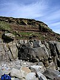

bedrock
phenomenon

Source: Wikipedia
Wikipedia Page (Something wrong with this association? Let us know.)
Wikidata Page (Something wrong with this association? Let us know.)
Occurs in:
- bedrock__mass-per-volume_density
- bedrock__fluid_permeability
- bedrock_uplift__length-per-time_rate
- bedrock_below-land_surface__depth
- bedrock_material__poisson_ratio
- bedrock_material__young_modulus
- bedrock_surface__antigradient_of_elevation
- bedrock_surface__elevation
- bedrock_surface__increment_of_elevation
- bedrock_surface__slope
- bedrock_surface__time_derivative_of_elevation
- bedrock_surface__time_derivative_of_slope
- bedrock_surface__x_derivative_of_elevation
- bedrock_surface__x_derivative_of_slope
- bedrock_surface__y_derivative_of_elevation
- bedrock_surface__y_derivative_of_slope
- bedrock_surface_land-mask__elevation
- bedrock_surface_sea-mask__elevation
- bedrock_top_from-soil_surface__depth